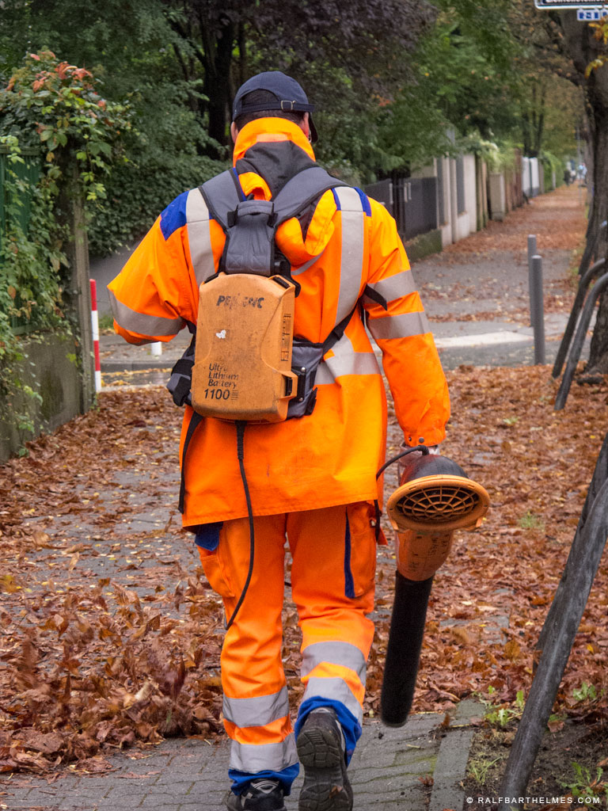

במשך השנים השתנו דרישות וציפיות התושבים מהרשות העירונית.
כיום התושב מצפה לשירות לקוחות איכותי הכולל מספר נקודות מגע עם העירייה, שירותי אונליין ושקיפות מלאה.
"CityAll", מערכת הדגל של כארם וטארק, הינה אפליקציה סלולרית חכמה המותאמת באופן ספציפי לכל רשות ורשות.

האפליקציה יוצרת מהפכה בתחום השירות לתושב ומאפשרת לו ליהנות מנגישות גבוהה לסל השירותים העירוני מכל מקום ובכל זמן.
מבחינת הרשות, האפליקציה הייחודית לא רק שממצבת אותה כרשות ירוקה וכנותנת שירות איכותית ששמה את התושב במרכז, אלא גם חוסכת לה הרבה זמן וכסף.
מעבר לעיצוב הממשק והתאמת המערכת לצרכי הרשות, קבוצינו יודעת לתכנן, לעצב ולהפיק, תהליך שיווקי מובנה וממותג המעלה את המערכת לתודעת התושבים בעיר, והופך אותה לנקודת מגע שימושית ונוחה הן לתושב והן לרשות.